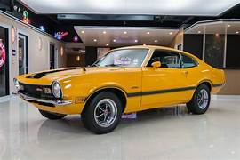
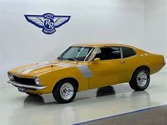
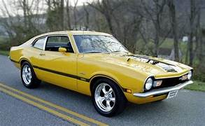

ford maverick de 1970
ficha tecnica

O Ford Maverick 1970 era equipado com diferentes opções de motores, incluindo versões de 6 cilindros (2.8L e 3.3L) e V8 (5.0L), todos movidos a gasolina, com potência que variava aproximadamente de 100 cv até mais de 200 cv nas versões mais fortes. Possuía tração traseira e podia vir com câmbio manual de 3 ou 4 marchas, além de opção automática.Sua velocidade máxima variava entre cerca de 150 e 190 km/h, dependendo da motorização. O modelo era oferecido com carroceria cupê de 2 portas ou sedã de 4 portas. Entre as características gerais, contava com direção mecânica, freios a tambor (com disco na dianteira em algumas versões) e suspensão voltada para conforto, mantendo o estilo clássico dos carros americanos da época.
historia

A história do Ford Maverick 1970 começa com o lançamento do modelo pela Ford nos Estados Unidos, com o objetivo de competir no segmento de carros compactos e acessíveis, que estava crescendo no final dos anos 1960.O Maverick foi desenvolvido para ser um carro mais econômico e simples em comparação aos modelos maiores da marca, mas sem abrir mão do desempenho, principalmente nas versões com motor V8. Seu nome foi inspirado na ideia de independência e inovação, buscando atrair um público mais jovem.Com o tempo, o modelo ganhou popularidade e acabou sendo produzido também no Brasil a partir da década de 1970, onde ficou bastante conhecido, especialmente nas versões mais potentes. Sua combinação de estilo, desempenho e custo relativamente acessível fez com que o Maverick se tornasse um carro marcante da época.
curiosidades

O Ford Maverick 1970 possui várias curiosidades interessantes. O nome “Maverick” vem de um termo usado nos Estados Unidos para se referir a alguém independente ou fora do padrão, o que combinava com a proposta do carro. Ele foi lançado como um modelo mais barato da Ford, sendo vendido inicialmente por um preço bem competitivo para a época.Outra curiosidade é que, apesar de ser considerado um carro compacto, algumas versões tinham motores V8 bastante potentes, o que garantia um desempenho acima da média. No Brasil, o Maverick ficou especialmente famoso pelas versões esportivas, que até hoje são muito valorizadas por colecionadores.Além disso, o carro ganhou destaque em corridas e também na cultura automotiva, sendo lembrado pelo ronco forte do motor e pelo estilo clássico dos anos 1970.
proxima pagina
pagina anterior